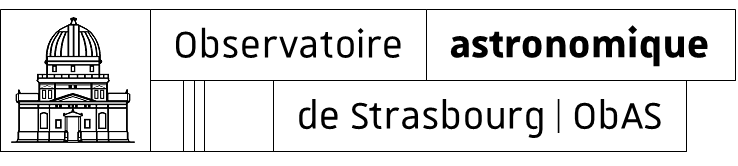
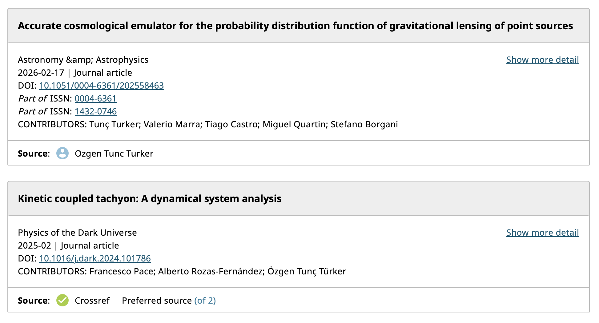
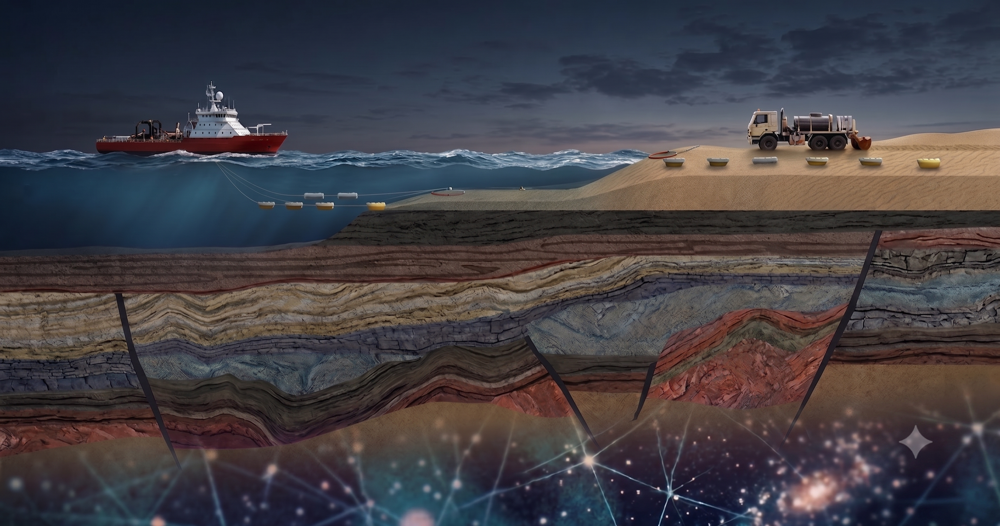
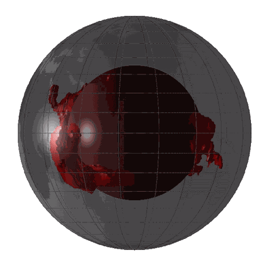
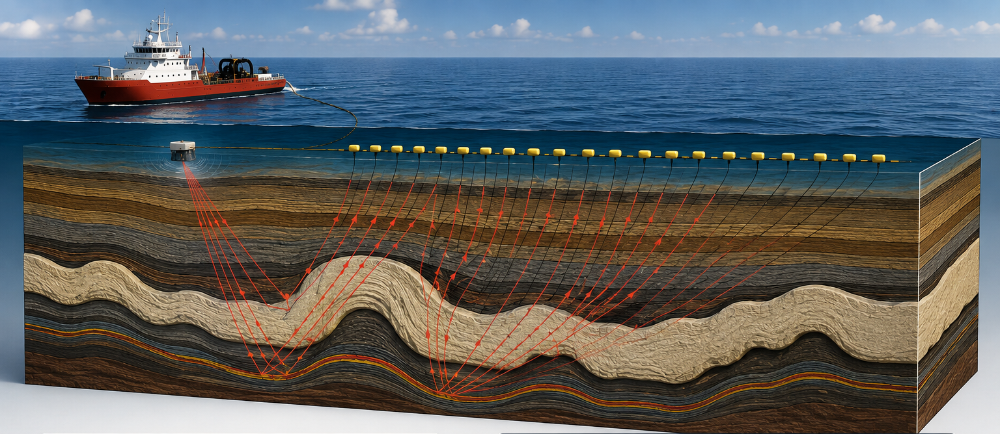
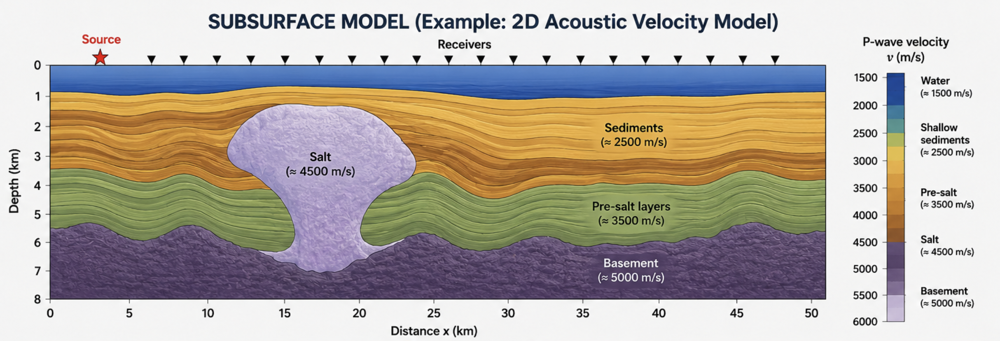
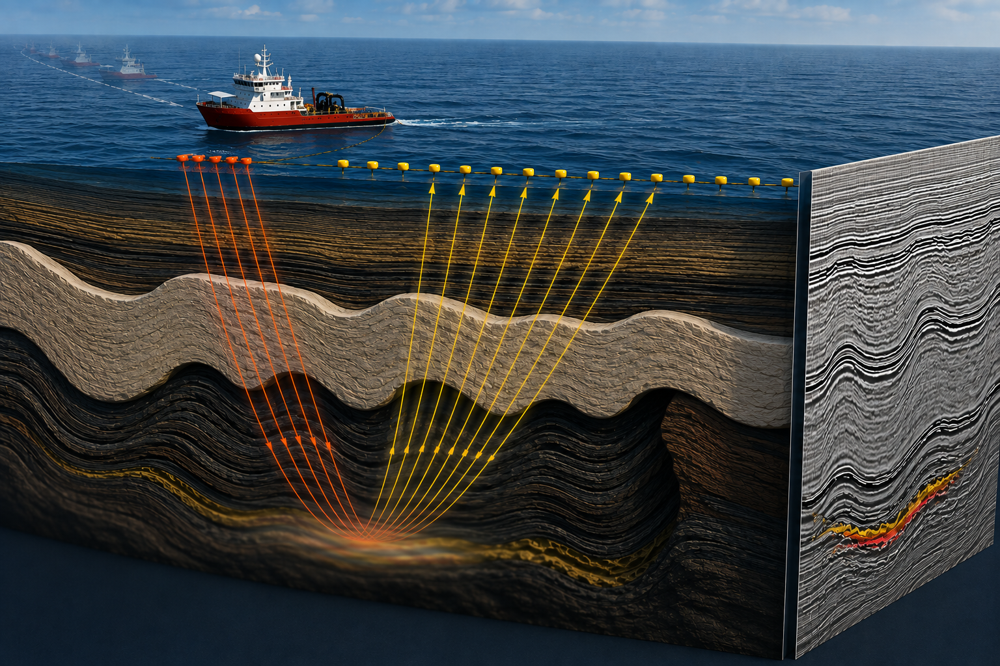

The Journey:
From engineering to fundamental science
2015 - 2019
BSc Electrical Engineering
Istanbul Technical University · Istanbul, Turkey
Istanbul Technical University · Istanbul, Turkey
2019 - 2021
MSc Physics
Sorbonne University · Paris, France
Sorbonne University · Paris, France
2022 - 2026
PhD Numerical Cosmology
Federal University of Espírito Santo · Vitória, Brazil
Federal University of Espírito Santo · Vitória, Brazil
BSc Electrical Engineering - ITU
Istanbul Technical University · Istanbul, Turkey
MSc Physics - Sorbonne University
Sorbonne Université · Paris, France



PhD Numerical Cosmology - UFES
Federal University of Espírito Santo · Vitória, Brasil

Different Worlds, Similar Physics
Observe how a signal is modified by matter
→
infer the hidden physical system
What do we have beneath our feet?

Seismic imaging
Acoustic & Elastic Waves!

Animation of LLSVPs based on the clustering
analysis of Cottaar & Lekic (2016).
Seismic imaging

Full Pipeline
Data → Model: The inverse loop
1
Make an initial Earth model.
2
Simulate seismic waves through that model.
3
Compare simulated seismograms with measured ones.
4
Tune the model.
5
Repeat!
Forward Problem: Wave Propagation
Predicting seismic wavefield \(\mathbf{u}(\mathbf{x}, t)\) given Earth parameters \(\mathbf{m}(\mathbf{x})\)
and source \(\mathbf{s}(\mathbf{x}, t)\).
1. Wave Equation
\begin{equation}
\frac{\partial^2 u(\mathbf{x},t)}{\partial t^2} = c^2 \nabla^2 u(\mathbf{x},t) +
s(\mathbf{x},t)
\end{equation}
2. Matrix Operator Form
Virieux & Operto 2009, Eq. 1
\begin{equation}
\mathbf{M}(\mathbf{x}) \frac{\partial^2 \mathbf{u}(\mathbf{x}, t)}{\partial t^2} =
\mathbf{A}(\mathbf{x})\mathbf{u}(\mathbf{x}, t) + \mathbf{s}(\mathbf{x}, t)
\end{equation}
Acoustic Case (Scalar Field):
\(\mathbf{M} = 1/c^2\) and \($\mathbf{A}$ = \nabla^2\)
\(\mathbf{M} = 1/c^2\) and \($\mathbf{A}$ = \nabla^2\)
Elastic Case (Vector Field) -> Navier-Cauchy Equation:
$\mathbf{M}$ is mass density, $\mathbf{A}$ is stress-divergence operator (Lamé parameters).
$\mathbf{M}$ is mass density, $\mathbf{A}$ is stress-divergence operator (Lamé parameters).
Forward Problem: Wave Propagation

Forward Problem: Wave Propagation
3. Fourier Transform (Inhomogeneous Helmholtz equation)
Virieux & Operto 2009, Eq. 2
\begin{equation}
\mathbf{B}(\mathbf{x},\omega)\mathbf{u}(\mathbf{x},\omega) = \mathbf{s}(\mathbf{x},\omega)
\end{equation}
Impedance matrix: $\mathbf{B}(\mathbf{x},\omega) = -\omega^2 \mathbf{M}(\mathbf{x}) -
\mathbf{A}(\mathbf{x}) \equiv \mathbf{B}(\mathbf{m})$, where $\mathbf{m}$ represents the model
parameters.
4. Sampling
Virieux & Operto 2009, Eq. 3
\begin{equation}
\mathbf{d}_{\text{cal}} = \mathbf{P} \mathbf{u} = \mathbf{P} \mathbf{B}^{-1}\mathbf{s}
\end{equation}
The projection (sampling) operator \(\mathbf{P}\) samples the wavefield \(\mathbf{u}\) at discrete
receiver
locations \(\mathbf{x}_r\).
Objective Function

Objective Function
$\mathbf{m}$ -> Forward modelling -> $\mathbf{d}_{\text{cal}}(\mathbf{m})$
The Least-Squares Norm (Misfit Function)
Virieux & Operto 2009, Eq. 4
\begin{equation}
C(\mathbf{m}) = \frac{1}{2} \| \mathbf{d}_{\text{obs}} - \mathbf{d}_{\text{cal}}(\mathbf{m}) \|^2
\end{equation}
Quantifying residual vector \(\Delta \mathbf{d} = \mathbf{d}_{\text{obs}} -
\mathbf{d}_{\text{cal}}(\mathbf{m})\) between observed and calculated wavefields at receiver
positions.
Next question:
what
direction we update $\mathbf{m}$ in model parameter space to minimize this residual?
Inverse Problem: Gradient via Sensitivity Matrix
Matrix Form of Misfit Gradient
Virieux & Operto 2009, Eq. 9
\begin{equation}
\frac{\partial C}{\partial \mathbf{m}} = -\Re \left\{ \mathbf{J}^\dagger \mathbf{d} \right\} \quad
\text{where } \mathbf{J} = \frac{\partial \mathbf{d}_{\text{cal}}}{\partial \mathbf{m}}
\end{equation}
The gradient \(\nabla_{\mathbf{m}} C\) is the product of the adjoint sensitivity matrix
\(\mathbf{J}^\dagger\) and data residual vector \(\mathbf{d}\).
The Computational Bottleneck
Perturbation: \(m_j \to m_j + \delta m_j\)
→
Wave propagates:
\(\mathbf{B}(\mathbf{m}+\delta\mathbf{m})\mathbf{u} = \mathbf{s}\)
Forming the Jacobian \(\mathbf{J}\) explicitly requires \(N_m\) full wave simulations
(one per grid cell, millions of runs!).
Solution:
The Adjoint-State Method
The Adjoint State Method
Adjoint Wavefield \(\mathbf{r}_b\) & Gradient Formula
Virieux & Operto 2009, Eq. 24
\begin{equation}
\nabla_{m_l} C =
\Re \left\{ \mathbf{u}^\dagger \left( \frac{\partial \mathbf{B}}{\partial m_l} \right)^\dagger
\mathbf{r}_b \right\} \quad \Longleftrightarrow \quad \mathbf{B}^\dagger \mathbf{r}_b =
\mathbf{P}^\dagger \mathbf{d}
\end{equation}
1. Forward
Wavefield \(\mathbf{u}\)
Fired from source \(\mathbf{s} \rightarrow\) propagates forward in time into the Earth.
2. Adjoint
Wavefield \(\mathbf{r}_b\)
Data errors \(\mathbf{d}\) at receivers \(\rightarrow\) back-propagated into the Earth as virtual
sources!
3. Gradient
\(\nabla C = \mathbf{u} \otimes \mathbf{r}_b\)
Zero-lag spatial cross-correlation of \(\mathbf{u}\) and \(\mathbf{r}_b\) gives sensitivity for ALL
grid cells!
Forward vs. Adjoint Wave Equation
Parameter Update
Newton Optimization Step
Virieux & Operto 2009, Eq. 7
\begin{equation}
\Delta\mathbf{m} = -\left[ \frac{\partial^2 C(\mathbf{m})}{\partial\mathbf{m}^2} \right]^{-1}
\frac{\partial C(\mathbf{m})}{\partial\mathbf{m}} \;=\; -\mathbf{H}^{-1} \nabla_{\mathbf{m}} C
\end{equation}
The perturbation direction is opposite to the steepest ascent of the objective function (\(-\nabla
C\)).
The Newton step scales \(\nabla C\) by the inverse Hessian \(\mathbf{H}^{-1}\) (curvature) to adjust step size in steep vs flat directions.
The Newton step scales \(\nabla C\) by the inverse Hessian \(\mathbf{H}^{-1}\) (curvature) to adjust step size in steep vs flat directions.
Parameter Update: Practical Methods
1. Gradient Descent
\(\Delta\mathbf{m} = -\alpha_k \mathbf{g}_k\)
Fast compute per step, but slow overall convergence.
Attenuation -> infinitesimal gradient -> illumination blur at depth.
Attenuation -> infinitesimal gradient -> illumination blur at depth.
2. Diagonal Hessian
\(\Delta\mathbf{m} = -\alpha_k \, \left[\text{diag}(\mathbf{H})\right]^{-1} \mathbf{g}_k\)
Equalizes source energy illumination at depth!
\(\mathbf{H}\) scales $\mathbf{g}$.
\(\mathbf{H}\) scales $\mathbf{g}$.
3. Gauss-Newton
\(\Delta\mathbf{m} = -\left[\mathbf{J}^\dagger \mathbf{J}\right]^{-1} \mathbf{g}_k\)
Deconvolves point-spread illumination blur; drops 2nd-order terms.
Iterative Conjugate Gradient! Heavy operation!
Iterative Conjugate Gradient! Heavy operation!
4. Quasi-Newton (L-BFGS)
\(\Delta\mathbf{m} \approx -\tilde{\mathbf{H}}^{-1}_{\text{LBFGS}} \, \mathbf{g}_k\)
Builds inverse Hessian approximation from past gradient history!
$\mathbf{g}_k \equiv \nabla_{\mathbf{m}_k} C$
Summary: The Complete FWI Mathematical Loop
1. Forward Modeling (Eq. 1–3): Solve
\(\mathbf{B}(\mathbf{m})\mathbf{u} = \mathbf{s}\) to calculate wavefield \(\mathbf{u}\) and synthetic
data \(\mathbf{d}_{\text{cal}} = \mathbf{P}\mathbf{u}\).
2. Data Misfit (Eq. 4): Compute data residual vector
\(\mathbf{d} = \mathbf{d}_{\text{obs}} - \mathbf{d}_{\text{cal}}\) and misfit \(C(\mathbf{m}) =
\frac{1}{2}\mathbf{d}^\dagger\mathbf{d}\).
3. Adjoint Wavefield (Eq. 24): Back-propagate residuals to
solve adjoint wave equation \(\mathbf{B}^H \mathbf{r}_b = \mathbf{P}^\dagger \mathbf{d}\).
4. Update (Eq. 7, 9): Cross-correlate wavefields
\(\nabla C = \Re\{\mathbf{u}^\dagger (\frac{\partial \mathbf{B}}{\partial \mathbf{m}})^\dagger
\mathbf{r}_b\}\) and update \(\mathbf{m}^{(k+1)} = \mathbf{m}^{(k)} - \alpha \mathbf{H}^{-1} \nabla C\).
5. Iterate: Repeat steps 1–4 until misfit \(C(\mathbf{m}) <
\epsilon\) converges to the optimal Earth model \(\hat{\mathbf{m}}\)!